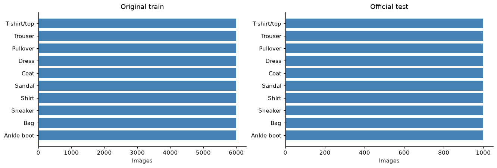
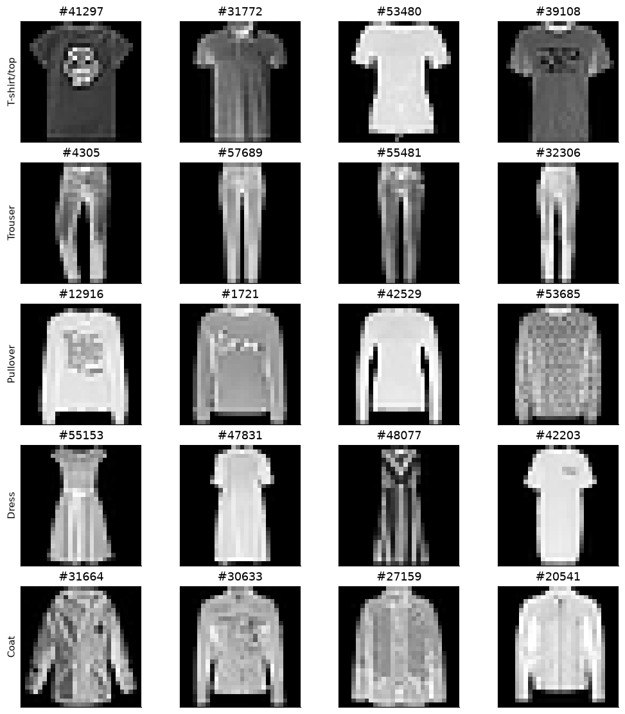
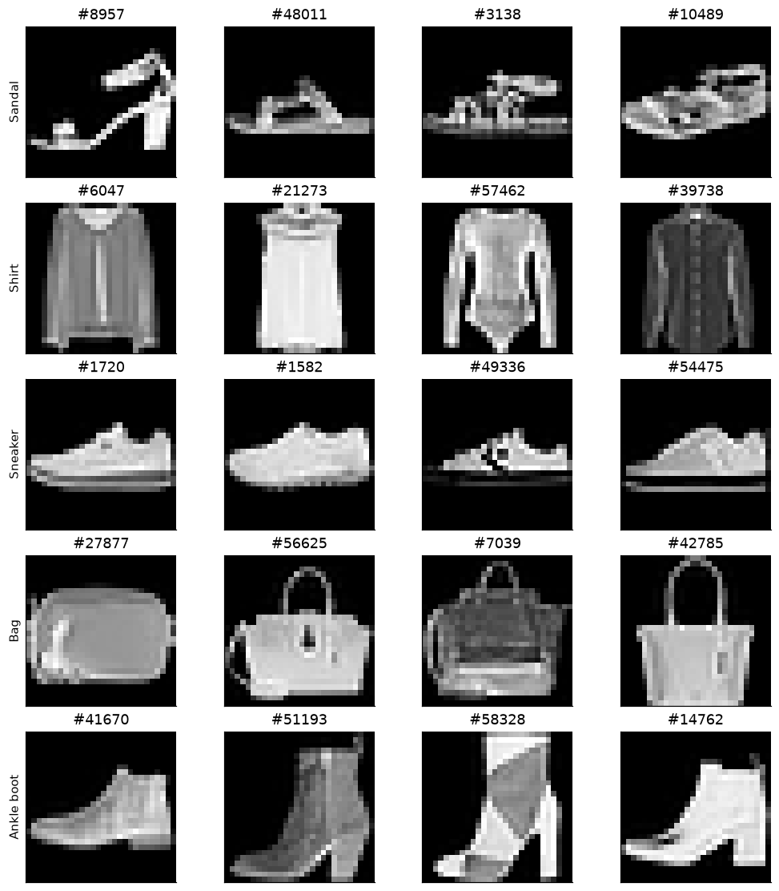
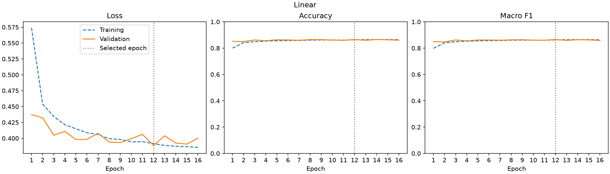
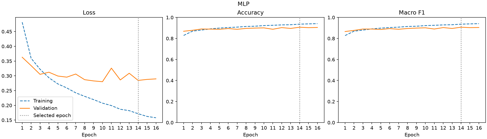
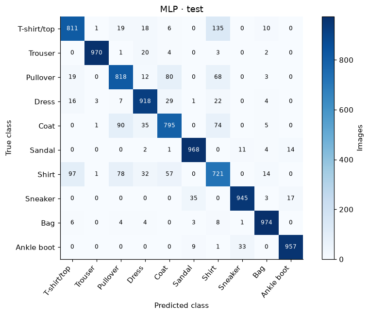
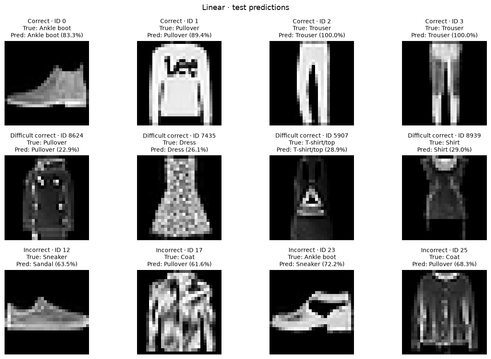
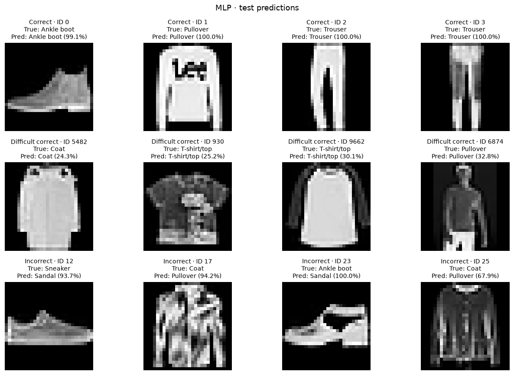

M1 scope
- EDA: Data exploration — class balance, samples and preprocessing, extended with appearance statistics, class similarity, PCA and t-SNE.
- Dataset/DataLoader: data_loader.py — fixed split, normalization and batches.
- Training and validation: train.py — shared loop and checkpoints.
- Runnable Linear and MLP: linear.py and mlp.py — both trained for 16 epochs; results below.
- Optional CNN: trained and evaluated using the same pipeline; comparison with MLP.
Part 1 — Problem and data description
Problem statement
Predict one of ten clothing classes from a 28 × 28 grayscale image for automatic product categorization. Similar upper-body silhouettes and limited detail make some classes difficult to separate.
Given x ∈ R^(1×28×28), learn ten class scores fθ(x) and predict ŷ = argmax fθ(x). M1 compares a linear classifier and an MLP with one hidden layer, measuring accuracy against parameter and runtime costs.
Dataset source and scope
We use the 2017 Fashion-MNIST release by Zalando Research, described by Xiao, Rasul and Vollgraf and distributed under the MIT license. It is our sole dataset; each product image has one supplied category label.
Fashion-MNIST contains 60,000 official training images and 10,000 test images, stored as IDX arrays with pixel values from 0 to 255. The classes are T-shirt/top, Trouser, Pullover, Dress, Coat, Sandal, Shirt, Sneaker, Bag and Ankle boot.
Split and leakage prevention
| Partition | Images | Images per class |
|---|---|---|
| Training | 54,000 | 5,400 |
| Validation | 6,000 | 600 |
| Official test | 10,000 | 1,000 |
Validation is stratified from the official training set with seed 42. Detailed EDA and normalization use only training images; test evaluation follows checkpoint selection. Disjoint training and validation indices are stored with checkpoints. Product identities are unavailable, so index separation cannot establish product-level independence or exclude near-duplicates.
Exploratory data analysis



The four uncompressed IDX files occupy 54,950,048 bytes (52.404 MiB), including headers. Images contain 784 unsigned-byte pixels; labels are integers from 0 to 9. No images are removed, relabeled or imputed.
Data exploration examines intensities, brightness, contrast, foreground coverage, mean images, PCA and t-SNE. Roughly half of training pixels are zero background, not necessarily empty images. Pullover and Coat have the closest class means. On a balanced 6,000-image training sample, two PCA components retain 46.62% of variance and 64 retain 88.22%. Two-dimensional overlap does not measure classifier performance; PCA, t-SNE and masks are exploratory, not model inputs.
Preprocessing and example batch
Pixels are divided by 255, then standardized with training-only mean 0.286209 and standard deviation 0.353160, giving values approximately −0.8104 to 2.0212. Full batches contain float32 images [128, 1, 28, 28] and int64 labels [128]. No resizing or augmentation is used; partial batches are retained. data_loader.py prints batch shapes and fitted statistics.
Part 2 — Methodology
Pipeline
Training and evaluationRaw IDX images + labels
→ fixed train / validation / test split
→ training-fitted normalization
→ Dataset / DataLoader
→ Linear or MLP → logits → cross-entropy → Adam updates
→ validation macro-F1 → selected checkpoint
→ test logits → argmax → class labels → accuracy / macro-F1
Argmax predicts labels without post-processing. Softmax saves inspection probabilities; validation evaluates fixed weights after each epoch.
- download.py downloads and extracts missing files.
- data_loader.py loads arrays, builds the split and returns DataLoaders. Only the training loader shuffles.
- train.py clears gradients, computes loss, backpropagates, clips gradients and updates weights. Validation uses evaluation mode without gradients.
- evaluate.py reloads the selected checkpoint and saves metrics and predictions.
Linear
- Flatten
[B, 1, 28, 28]to[B, 784]. - One
Linear(784, 10)layer returns ten raw logits; 7,850 trainable parameters. - Cross-entropy receives logits directly. No softmax is applied before the loss.
MLP
- Flatten →
Linear(784, 256)→ ReLU →Linear(256, 10); 203,530 parameters. - ReLU sets negative hidden activations to zero, enabling nonlinear combinations of pixels.
- No dropout or weight decay. Both baselines flatten images without explicitly encoding spatial neighborhoods.
Loss, metrics and experiment design
For target class y and logits z, cross-entropy is −z[y] + log(Σ exp(z[k])), averaged over the batch. Epoch losses are weighted by batch size. Accuracy is the fraction of correct predictions; macro-F1 averages the ten per-class F1 scores, weighting each class equally. Validation macro-F1 selects checkpoints; test accuracy and macro-F1 describe held-out performance.
Hypothesis: MLP improves classification through nonlinear features. Changed: architecture and capacity (784→10 versus 784→256→10). Fixed: inputs, split, seed, optimizer, learning rate, batch size, 16 epochs and evaluation. Criterion: higher validation macro-F1, with test accuracy/F1 and parameter/time costs reported. Capacity also changes, so the comparison cannot isolate nonlinearity.
Training setup
- Seed 42; the same split and normalization for both models.
- Adam, learning rate 0.001, batch size 128, gradient norm clipped to 5.
- All 16 epochs run; no early stopping or learning-rate scheduler.
best.ptstores the highest validation macro-F1 weights; earliest exact tie wins.checkpoint.ptstores epoch-16 weights. Reported results usebest.pt.- CPU, four PyTorch threads, macOS arm64; Python 3.12.13, PyTorch 2.14.0, NumPy 2.5.3, scikit-learn 1.9.1.
Training uses float32 without pretrained weights or hyperparameter search; settings are in train.py. The project defines architectures and training/evaluation; PyTorch provides layers, differentiation and Adam, NumPy arrays, scikit-learn splits/metrics, and Matplotlib plots.
Part 3 — Implementation results
Quantitative comparison
Retained seed-42 baseline results; the full comparison covers all five models.
| Model | Validation accuracy | Validation macro-F1 | Test accuracy | Test macro-F1 | Parameters | Best epoch | Train seconds | Test ms/image |
|---|---|---|---|---|---|---|---|---|
| Linear | 86.53% | 0.8658 | 84.03% | 0.8408 | 7,850 | 12 | 5.94 | 0.0019 |
| MLP | 90.68% | 0.9070 | 88.77% | 0.8878 | 203,530 | 14 | 11.88 | 0.0024 |
Inference time is the median of three full batched passes after one warmup, including batch loading, forward computation and argmax. Training time includes validation and history/checkpoint bookkeeping. Both runs were measured sequentially.
Training behavior


Comparison and representation
At the selected checkpoints, training/validation accuracy is 86.83%/86.53% for Linear and 94.59%/90.68% for MLP. MLP's larger gap suggests more overfitting. Upper-body clothing remains ambiguous in the saved predictions, consistent with the EDA examples.
Both models lack local filters and spatial weight sharing. Linear adds pixel contributions; MLP learns nonlinear combinations. Validation macro-F1 rises from 0.8658 to 0.9070, supporting the hypothesis for this configuration, subject to the capacity difference.
Epoch curves record changing weights; the accuracy gaps above use fixed selected weights.
Confusion matrices and error analysis
From saved test predictions: rows are true labels, columns are predictions, and each row contains 1,000 images. Linear makes 1,597 errors (15.97%); MLP makes 1,123 (11.23%).

| True → predicted | Linear | MLP |
|---|---|---|
| T-shirt/top → Shirt | 147 (14.7%) | 135 (13.5%) |
| Shirt → T-shirt/top | 121 (12.1%) | 97 (9.7%) |
| Pullover → Coat | 130 (13.0%) | 80 (8.0%) |
| Coat → Pullover | 113 (11.3%) | 90 (9.0%) |
| Sneaker → Sandal | 27 (2.7%) | 35 (3.5%) |
Upper-body clothing: shared torso and sleeve outlines plausibly explain errors. Shirt recall rises from 59.5% to 72.1%, still the lowest class recall. Both models predict Coat #17 as Pullover. The CNN comparison below examines a representation with local spatial filters.
Footwear: MLP improves overall performance but increases Sneaker→Sandal errors from 27 to 35. Test Sneaker #12 becomes Sandal with 93.7% MLP confidence, and Ankle boot #23 becomes Sandal with over 99.9%. These examples motivate validation-based augmentation and confidence calibration experiments.
Correct, difficult and incorrect predictions
Rows show the first four correct predictions, four lowest-confidence correct predictions, and first four mistakes. IDs are zero-based test indices. Confidence is maximum softmax probability, uncalibrated for correctness. Examples illustrate behavior; confusion matrices quantify frequency.


Optional CNN comparison
The two-block CNN uses the same split and training settings, selecting epoch 14. It reaches 91.05% test accuracy and 0.9108 macro-F1, improving accuracy by 2.28 percentage points over MLP with 105,866 parameters versus 203,530. Batched CPU inference is about 14× slower. Learning curves · Error analysis · Run record.
Limitations and conclusion
MLP improves overall classification; Linear remains smaller and faster. Upper-body ambiguity persists, and gains are not uniform across classes.
One seed and one split provide no estimate of training variability, so mean ± standard deviation is unavailable. The 16-epoch budget and default settings do not establish each architecture’s best attainable performance. Timings describe batched CPU throughput, not single-request latency or performance on other hardware. Low-resolution grayscale catalog data limits generalization to real photographs; duplicate/product-level leakage has not been audited.
LSTM and Transformer have also completed training and evaluation as early M2 work, reaching 88.21% and 86.89% test accuracy. The five-model comparison includes their curves, confusion matrices and prediction examples.
Reproducibility and artifacts
Source repository · Pinned dependencies. From the repository root, with Python 3.12:
Terminal · repository rootpython3.12 -m venv .venv
.venv/bin/python -m pip install -r requirements.txt
.venv/bin/python Assignment1/download.py
.venv/bin/python Assignment1/data_loader.py
cd Assignment1
../.venv/bin/python - <<'PY'
from train import set_seed, fit
from evaluate import evaluate
from models.linear import LinearClassifier
from models.mlp import MLP
set_seed(42)
linear_run = fit(LinearClassifier(), "Linear", 42)
set_seed(42)
mlp_run = fit(MLP(), "MLP", 42)
evaluate(LinearClassifier(), linear_run)
evaluate(MLP(), mlp_run)
PY
Outputs are saved under Assignment1/outputs/.
Retained runs
- Linear run — selected epoch 12.
- MLP run — selected epoch 14.
Retained runs include metrics, curves, epoch histories and predictions. Both checkpoint files store weights, epoch, split indices and normalization, without optimizer state. Rerunning reconstructs checkpoints with new timestamps and timing measurements.